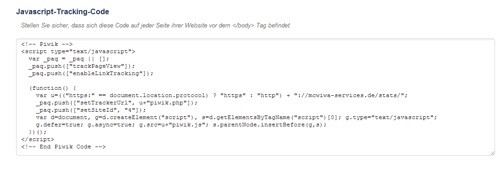
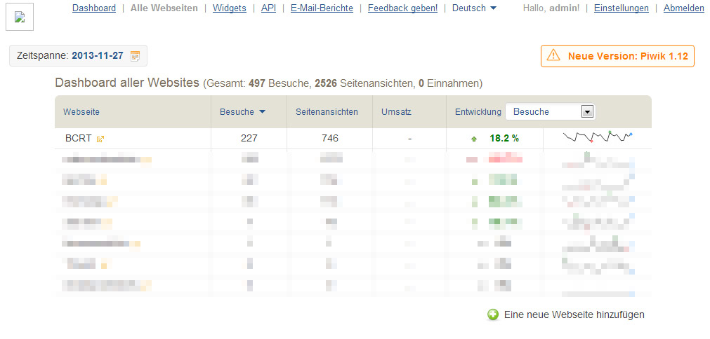
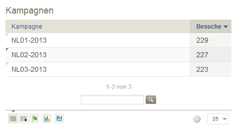
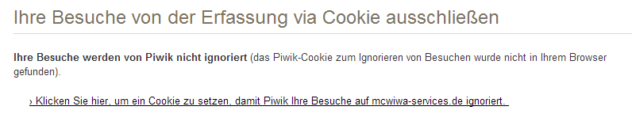
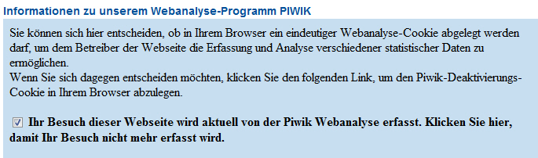
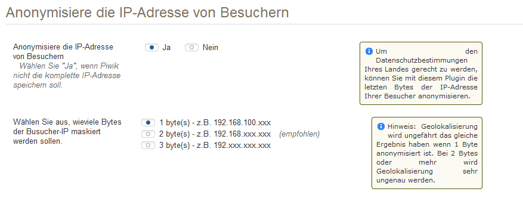

Piwik
Die selbstgehostete, datenschutzkonforme Open-Source Alternative zu Google Analytics
Maik Wagner
Piwik läuft auf dem eigenen Server
Systemvoraussetzungen
- Webserver (Apache, Nginx, IIS, etc.)
- PHP 5.1.3 oder höher
- PHP Extensions: pdo ,pdo_mysql oder mysqli (standardmäßig vorhanden)
- MySQL 4.1 oder höher
Empfohlene Konfiguration
- PHP 5.3 (ist wesentlich effizienter in der Speicherverwaltung)
- die GD-Lib-Extension (für die automatische Graphik-Generierung)
Einbinden des Tracking-Codes
- Wird für Copy-Paste zur Verfügung gestellt

- wird am Fuß der Seite, vor dem </body> eingefügt
- relevant ist die "
.push(["setSiteId", "4"]);"
Zentrale Installation für alle Instanzen

Admin-Ansicht
vorteile
- haut alles in eine Datenbank
- ein zentraler Update
- der Admin hat die Übersicht
- Kunden bekommen eigenen Zugriff - nur auf die eigenen Daten
Piwik im Detail
- Besucher
- Besucher-Log
- Einstellungen
-
- Aktionen
Alle Auswertungen in Relation zum Zeitraum
Schmankerl
Kampagnen

Auswertung von Zugriffen z.B. über Newsletter
Schmankerl
Cookie zum Ausschluss der eigenen Besuche

Schmankerl
Cron-Jobs zur Vorbereitung der Berichte
- Berichte werden zur Laufzeit generiert und dann gespeichert.
- Cron-Jobs können nachts die Berichte generieren, so dass sie direkt aufgerufen werden können.
Schmankerl
Opt-Out-Option

Darstellung der Cookie-Funktion nach außen
Datenschutz
um den deutschen Datenschutzgesetzen Genüge zu tun, müssen vier Dinge erfüllt sein:
- Keine Weitergabe der Daten an Dritte
- Anonymisierung der IP-Adressen
- Widerspruchsrecht der Betroffenen
- angepasster Datenschutzhinweis
Datenschutz
Keine Weitergabe an Dritte
- sichergestellt durch Lagerung der Daten auf dem eigenen Server
- ansonsten Vertrag zur Auftragsdatenverarbeitung bei Übermittlungen an Dritte (§ 11 BDSG – Vertrag)
Datenschutz
Anonymisierung der IP-Adressen
- möglich durch das "AnonymizeIP"-Plugin
- Anonymisierung von 1 byte (192.168.100.xxx)

Datenschutz
Widerspruchsrecht der Betroffenen
- gelöst durch die mitgebrachte Opt-Out-Möglichkeit
Beispiel für Opt-Out-Darstellung
Datenschutz
angepasster Datenschutzhinweis
Im Datenschutzhinweis muss auf den Einsatz von Piwik und die Möglichkeit des Widerspruchs hingewisen werden.
Diese Website benutzt Piwik, eine Open-Source-Software zur statistischen Auswertung der Besucherzugriffe. Piwik verwendet sog. “Cookies”, Textdateien, die auf Ihrem Computer gespeichert werden und die eine Analyse der Benutzung der Website durch Sie ermöglichen. Die durch den Cookie erzeugten Informationen über Ihre Benutzung dieses Internetangebotes werden auf dem Server des Anbieters in Deutschland gespeichert. [...]
Beispiel bei http://rechtsanwalt-schwenke.de/piwik-als-alternative-zu-google-analytics-mit-datenschutzmuster
PIWK
- einfach einzurichten
- einfach zu bedienen (auch für Kunden)
- konform mit deutschen Datenschutrichtlinien
- aussagestark
- kostenlos